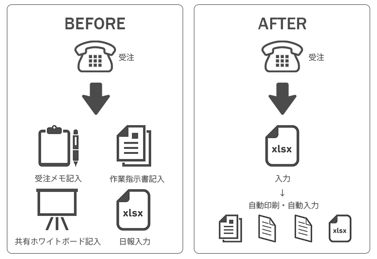

ご覧頂きありがとうございます。こちらはエンジニアとして就職を希望している@nontm_aのポートフォリオサイトです。興味を持っていただけましたら下記リンク先よりご連絡ください。
About me― 私について ―
経歴と思い
化粧品小売業界、建築業界で計10年間接客や事務をしておりました。建築業界で事務をしていた時に、残業時間を減らすため自主的にExcelVBAの受注・問い合わせシステムを作ったことがきっかけで、プログラミングに興味を持ちました。
思えば、これまでの職務経験を通して自分が一番わくわくして取り組めたことは
- 「煩雑な業務を仕組み化すること」
- 「 "こうなったら もっと良いのにな” を自力で実現すること」
- 「自分のつくったもので他の人の仕事や生活が楽になること」
ということでした。
具体的には、小売業界時代は適切な在庫量を保つための仕組みを考えたり、納品時の作業効率をあげたりといったことや、建築業界時代は、上記で触れた受注問い合わせシステム作成の他、スムーズな返答ができる環境作り、ベテランでも新人でも同様な応対ができるような環境作りといったことに取り組みました。
プログラマー・システムエンジニアを志したのは、まさにこのような過程を主な業務として取り組めるのではないかと考えたからです。
今後、自分やお客様の ”こうなったら もっと良いのにな” という希望をそのまま実現できるような高度な技術と知識を身につけ、企業の業務効率化や、育児介護等の負担を減らすなどの日々の暮らしの改善に貢献したいです。
生かせる資格
- 秘書技能検定2級(2008年取得)
- 日本商工会議所主催簿記検定2級(2013年取得)
- TOEIC 820点(2019年取得)
性格
- 根っからの世話焼き気質で、人の役に立てることが幸せです。
- 気になることは納得するまでとことん調べます。
- 人から論理的だと言われることが多いです。
アピールポイント
- 物事を細分化して順序だてて考えるプログラミングが好きです。
- ググる力にはわりと自信があります。
- 日々老若男女と接して培ってきた対人関係能力があります。
- 言われたことをやるだけではなく自ら考えて能動的に動きます。
希望する仕事
- 職種：サーバーサイドエンジニアとして開発の仕事を希望しています。
- 通える範囲：神戸,大阪（他都道府県での就職も検討しております。)
- 言語：今はPHPを中心に学習しておりますが、他の言語も貪欲に習得する予定です。
Programming Skills― 学習歴 ―
2019年10月から職業訓練校にてプログラミングを学習しております。現在カリキュラムは終了し、自主制作・就職活動をすすめています。
(訓)･･･訓練校カリキュラム (独)･･･独自学習
| HTML/CSS/Javascript | MySQL/PHP | WordPress | その他 | |
|---|---|---|---|---|
| 2019年10月 | HTML(訓) CSS(訓) |
MySQL基礎(訓) | Illustlator(訓) Photoshop(訓) |
|
| 2019年11月 | レスポンシ対応(訓) | MySQL基礎(訓) | ||
| 2019年12月 | Javascript(訓) JQuery(訓) |
PHP基礎(訓) | Ruby基礎(独) | |
| 2020年1月 | 架空サイト制作(訓) | 自作システム制作(独) Laravel基礎(独)(取組中) |
テーマ編集(訓) | Git+GitHub(独) (取組中) |
| 2020年2月 | 自作システム制作(訓) (取組中) |
Works― 開発経験 ―
2017年1月～3月 社内受注・問い合わせシステム（ExcelVBA)
制作時間：3ヶ月 運用・保守：2年
前職で、受注時に受注内容を複数のフォーマットに記入・入力していることが非効率だと感じ、それを一度の入力で済むようなExcelVBAのシステムを独学でつくりました。
開発後は社内に導入し、受注時の事務作業時間を約10分の1に減らすことができました。その後も改良を続け、入力フォームを工夫したり、データを登録・修正・再利用できるようにするなどしました。 このシステムは他営業所にも広がり現在も西日本全拠点で利用されています。 当時の上司からは、「非効率だと不満を言う社員は多いが、自らそれを改善しようと実際に行動に移せる社員はなかなかいない」という高評価を受けました。
- 苦労したポイント
- 多種多様な注文内容を一般化してプログラムに落とし込むこと
- 導入当初想定外のできごとが起こり都度修正したこと
- パソコンに慣れていない人が思いもよらぬところを触ってしまうことの対策と工夫
- 今後の課題
- 複数人で使用してデータを同期することが最後までできず悔しかったのでできるようになりたいです。
2020年1月 架空サイト「少人数英会話教室 STEP UP!」（HTML,CSS,Javascript)
英会話教室のコンセプトは、「少人数制ならではの一人ひとりへの手厚いサービス」。こんな教室あったらいいなという気持ちで楽しく制作しました。効果的な学習方法を真剣に考えたり、講師のキャラクター設定も練ったのでぜひお時間があればご一読頂けると幸いです。
制作期間：約2週間
- 苦労したポイント
- WEBサイトの配色やデザインをいちから考えるのが意外と難しかったこと
- 講師紹介部分でふわっと表示させるJQuery
- レスポンシブ対応
- 実際にアップロードしてみてデザインが崩れていた部分の修正
- 今後の課題
- 素早くサイトの配色やデザインを決めること
- なるべく簡潔で効果的なCSS設計
- 実機でのチェックを重ねること
2020年1月 自作WEBアプリケーション「Flash Cards」(PHP)
教科書を一冊終えた段階で制作したアプリです。
制作時間：9時間
- 機能
- 英単語を入力・修正・削除・一覧表示できる
- ランダムに1つ英単語表示、ボタンを押すと正解が表示される
- 苦労したポイント
- 入力修正のためのDBのカラムが足りないことに気づき後で追加することになったこと。
- 共通化部分をあまり考えず作ったので後から切り分け作業をしたこと。
- 今後の課題
- クラスを使った設計
- ログイン機能を実装すること(近日取組み予定)
- 入力文字(アルファベット・日本語)の制限をつけること
- 並び替え・絞り込み機能の実装
今日も単語帳。一覧に出して編集と削除も作ったものの、主キーをwordにしてしまったために修正でword自体を変更した時に行を指定できないという致命的なミスに気づく。idというカラムを増やして主キーかえてやり直してみます。あ、でもword重複はどうしよ？#プログラミング初心者#プログラミング学習 pic.twitter.com/lhtVVI9F5r
— のんちむ (@nontm_a) January 7, 2020
単語帳できた。昨日のエラーをクリアして、データベースからランダムに抽出して表示まで。見る人が見たらコードめちゃくちゃやな！ってなるかもですが、力ずくでも自分で考えて完成できて嬉しい😁#プログラミング初心者#プログラミング学習 pic.twitter.com/UKm0kBiAe2
— のんちむ (@nontm_a) January 8, 2020
2020年1月～2月 自作WEBアプリケーション「EASY WEEKDAY MEAL PLANNER」(PHP)(制作中)
現在制作中です。
- 機能
- 一週間の平日の献立を記録できる
- 一週間分の献立に必要な食材リストを表示する
- 現在苦労しているポイント
- 食材のデータベース設計と取り出し方
- for文を上手く使ってプログラムを簡素化すること
2020年2月 フレームワークを利用したアプリケーション(取組予定)
フレームワークLaravelを利用したアプリケーションを制作予定です。制作している単語帳アプリか献立アプリを作り直してさらに理解を深めようと考えています。
Others― その他 ―
英語学習
プログラミングをする上で最低限の英語能力が不可欠だと考え、以下の英語学習を継続しています。
- "外で歩く時間はリスニングする"と決めて習慣にしています。
- 聞き流すだけではなく、日本語音声→英語で答えるというクイズ形式で飽きないようにしています。
- 今の自分のレベルより高すぎず低すぎない教材を選んでいます。
- プログラミング学習で出てきた知らない単語は、さっと調べて意味ごとセットで理解するようにしています。
TOEIC 結果出ました。大学生の時よりも少し上回れたらいいなと思ってましたが100点ほどUPできました。学力と吸収力は昔の方があると思うけど、目的に沿った計画性と継続力は今の方があると思うしまだまだ進化できると励まされました。アラサーがんばるで。 pic.twitter.com/yHNrJpDMy6
— のんちむ (@nontm_a) January 7, 2020
記録を活用する
昔から表やグラフ、アプリで記録を残してモチベーションをあげたり、改善に役立てたりすることが好きです。記録を上手く活用するようなサービスのアイディアを日々模索しています。